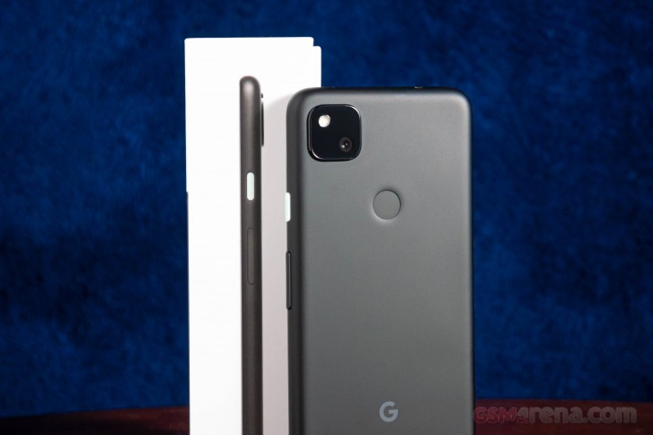

Pixel 4A
September 30, 2020 by John Doe

Google's Pixel 4a is finally here and although it has arrived a few months behind its rumored schedule, many are eager to buy one during these trying times. How much has been done to improve the Google-fied budget Pixel 3a from last year? Well, last year's formula was quite successful that Google didn't need to change it up too much. In fact, it lowered the price and doubled the storage.
Google Pixel 4a review
The 4a gets a modest performance boost with a Snapdragon 730G chipset, 2 additional GB of RAM, and updated UFS 2.1 storage speeds (The Pixel 3a used eMMC 5.1). A slight boost in battery capacity is seen as well, and the display size was stretched out to cover more surface area, and there's a punch hole selfie camera cut-out of the screen as well.
The backside and frame are both made of plastic, but the display glass is now made of Gorilla Glass 3. In addition, the camera, while otherwise identical in hardware, gets a slightly brighter f/1.7 aperture lens (the 3a had f/1.8). We are expecting to see camera performance comparable to what we saw on the Pixel 3a last year, which was wonderful to say the least.
Samsung Galaxy A71
September 30, 2020 by Jane Doe
The Galaxy A refresh has begun and the A51 and A71 are headliners of this new generation. Punch-hole appears to be the buzzword in this new series, though you should expect updated chipsets and cameras as well. And the Galaxy A71 has all these, topped with new Android and One UI.
Indeed, the Galaxy A71 seems to be packing just enough to warrant its upgrade status over the A70 - a smaller notch, a newer chip, a higher-res and higher-count camera setup, and newer Android and One launcher.
Samsung Galaxy A71 review
On the other hand, Glasstic is still the way forward for the Galaxy A lineup, and waterproofing is still not in the cards. The large 4,500 mAh battery and fast charging are going nowhere, so that's good.
Samsung Galaxy A71 review
The Snapdragon 730 has become somewhat of a celebrity in the midrange and the new Galaxy A71 has it, so as far as gaming - Samsung has you covered. Then the 64MP camera, which seems to be the next big thing, is now on the A71, too. Oh, and a macro snapper, one of the hottest features right now (not), is now part of the A71 as well.